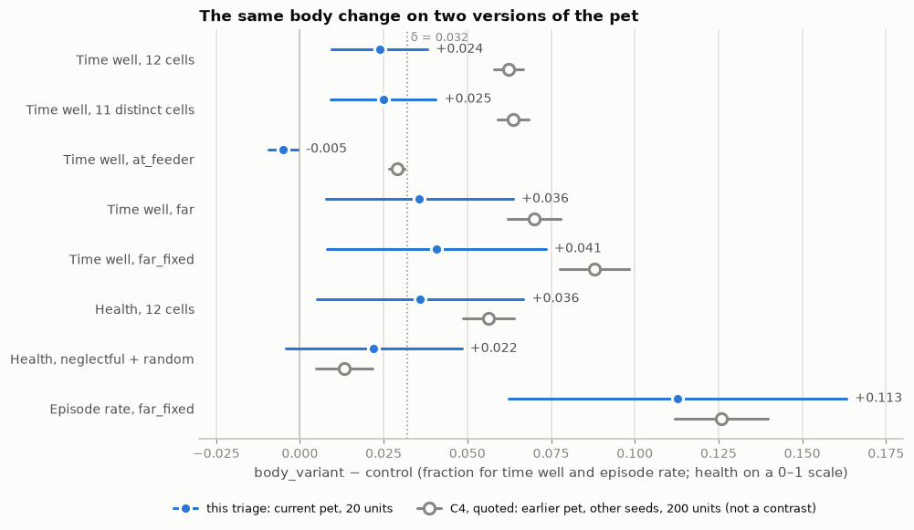
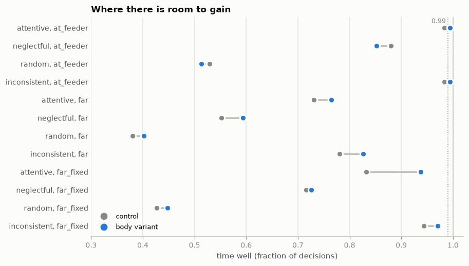

Case 2: the same body change, re-measured on the current version of a virtual pet. A 20-unit triage with no formal reading
Setup: imports, data, shared helpers, every official estimate
import sysfrom pathlib import PathROOT = Path.cwd().parent if Path.cwd().name =="notebooks"else Path.cwd()sys.path.insert(0, str(ROOT))import numpy as npimport pandas as pdimport matplotlib.pyplot as pltfrom IPython.display import HTML, Markdown, displayfrom casestudy import stylefrom casestudy import triage as trstyle.apply()REF = tr.REFC4 = REF["c4_quoted"]["values"] # quoted from the official result; no C4 per-life data is usedCHECKS = [] # every official number shown below is asserted and logged heredef check(got, ref, what): tr.assert_matches(got, ref, what) CHECKS.append(what)def say(text): display(Markdown(text))def show(df): display(HTML(df.to_html(index=False, border=0, classes="table table-sm")))E = {}for name, ref in REF["estimates"].items(): E[name] = tr.estimate(*tr.split(name)) check(E[name], ref, name)assert REF["formal_reading"] isFalseq =lambda r: tr.fmt(r) # "+0.024 [+0.009; +0.038]"t12, c12 = E["time_well|12_cells"], C4["time_well|12_cells"]assert c12["mean"] / t12["mean"] >2# "less than half"
Code
say(f'''**In short.** A variant of the pet's body physiology had passed a pre-registered validation of{REF["c4_quoted"]["units"]} units on an earlier version of the pet: the share of the pet's life spent "well"(neither deprived nor exhausted) rose by **{q(c12)}**. The pet changed after that, so I re-measured the samechange on the current pet, starting with a cheap triage of {REF["units"]} units (a unit is one random seed,run once in each arm and in each of the 12 cells, the owner-type × food-place combinations). The triage gives **{q(t12)}**:less than half.Three things to keep in mind. The triage was planned to **estimate the size of the effect only: it has no formalreading** (no "confirms" or "does not confirm", and no cut was applied). The two numbers come from **different petsand different seeds, so the pair is not a contrast**: it is shown side by side, never subtracted. And the reasons given below for why it shrank are not an explanation: they are what the official result describesalongside the estimates, without a reading (the current pet already starts higher, it has little exhaustion, and nearthe feeder the measure has almost no room left), and the same points the plan wrote down for its prediction beforethe triage; the triage does not test them. After the triage I closed the question without the planned {tr.N_UNITS_PLANNED}-unit run.Every number on this page is recomputed in a code cell from the published data(`data/body_triage_lives.parquet`) and asserted against the official values (`data/body_triage_reference.json`)to within 1e-9, or read from that file. Code is folded; click "Code" to see it.''')
In short. A variant of the pet’s body physiology had passed a pre-registered validation of 200 units on an earlier version of the pet: the share of the pet’s life spent “well” (neither deprived nor exhausted) rose by +0.062 [+0.058; +0.067]. The pet changed after that, so I re-measured the same change on the current pet, starting with a cheap triage of 20 units (a unit is one random seed, run once in each arm and in each of the 12 cells, the owner-type × food-place combinations). The triage gives +0.024 [+0.009; +0.038]: less than half.
Three things to keep in mind. The triage was planned to estimate the size of the effect only: it has no formal reading (no “confirms” or “does not confirm”, and no cut was applied). The two numbers come from different pets and different seeds, so the pair is not a contrast: it is shown side by side, never subtracted. And the reasons given below for why it shrank are not an explanation: they are what the official result describes alongside the estimates, without a reading (the current pet already starts higher, it has little exhaustion, and near the feeder the measure has almost no room left), and the same points the plan wrote down for its prediction before the triage; the triage does not test them. After the triage I closed the question without the planned 200-unit run.
Every number on this page is recomputed in a code cell from the published data (data/body_triage_lives.parquet) and asserted against the official values (data/body_triage_reference.json) to within 1e-9, or read from that file. Code is folded; click “Code” to see it.
1. The question
The pet is a small simulated animal. Its body has a simple physiology: food, hygiene and energy run down over the day and are restored by eating, being cleaned and sleeping. The project’s welfare measure, time well, is the fraction of the pet’s decisions taken while it was neither deprived (food, hygiene or energy below a fixed threshold) nor exhausted (energy below another fixed threshold).
An earlier study had tested a variant of the pet’s body physiology (on this page it is only “the body variant”) and found that it raised time well. That study used an earlier version of the pet, the one kept on the research bench. The current pet, the one in the game, has mechanics the bench pet lacks; one of them changes how tired the pet gets, and according to the analysis plan most of the earlier gain came from less exhaustion.
So the plan asked, in plain words: on the current pet, does the body variant still make the pet spend more time well, without costing it health or its ability to find food?
2. Two measurements, not a contrast
“C4” is the project’s label for the earlier study; it is kept here because the official result uses it.
earlier study (“C4”)
this triage
pet
the earlier, research-bench version
the current version, as simulated in the research code
units
200
20
seeds
its own reserved range
a different reserved range
reading
a pre-registered rule, applied: it passed, with a caveat on one cell
none: estimates only
The two studies use the same arms, the same 12 cells, the same analysis and the same measure. But the pet is different and so are the random seeds, so the difference between the two estimates is not an estimate of anything: no interval exists for it and none is computed. The earlier study’s numbers enter this page only as values quoted from the comparison section of the triage’s official result; no per-life data of the earlier study is used.
3. The design of the triage
Two arms: control (the current pet as it is) and body_variant (the same pet with the body variant). Four simulated owner types: attentive, neglectful, random, inconsistent; neglectful and random are the two that let the food run out. Three places where the owner puts the food:
at_feeder: at the pet’s feeder, always the same spot.
far: far from the pet, at a direction and distance drawn anew at every feeding.
far_fixed: each life draws three fixed spots far from the feeder once, at the start; every feeding lands on one of the three at random. The food is far, but where it appears is regular, so the pet can learn it.
The 4 × 3 owner/place combinations are the 12 cells. A unit is one random seed, given to both arms in every cell, so every comparison is paired. Each life lasts 14 simulated days.
Analysis (the plan’s, unchanged): for each unit, take body_variant − control in each cell and average over the cells; the estimate is the mean of the unit numbers and the 95% interval is Student t over the units. It is reported over the 12 cells and over the 11 distinct cells: (inconsistent, at_feeder) comes out identical to (attentive, at_feeder) in every life, so it counts the same cell twice.
What a triage is here. The plan had a confirmatory run of 200 units with a pre-registered reading rule. Before that run, a decision paused the project’s confirmatory runs on the pet’s brain: every idea there first gets a triage of 10–20 units, only to estimate the size of the effect. This study is about the body, not the brain; I chose separately to give it a triage first too. The addendum that set up this triage was written and approved before it ran, and it states that the triage gives no class, no p-value, no “confirms” or “does not confirm”, and that no cut is applied to it.
Timeline from the commit history and the run’s metadata
timeline = pd.DataFrame([ ("11-20 14:04", "Earlier study (C4) result committed", "4e5f4f64"), ("11-20 15:59", "Analysis plan proposed, with its prediction written down", "51f02fe9"), ("11-21 00:42", "Analysis plan approved", "3c223667"), ("11-21 00:54", "Simulation code merged", "bc0d3b43"), ("11-21 11:35", "Addendum proposed: a 20-unit triage first (and the code's triage mode)", "715f889c"), ("11-21 11:37", "Addendum approved", "d69a2500"), ("11-21 13:49:12", "Triage started", "e5d95bfc"), ("11-21 13:58:24", "Triage finished: all lives measured and saved", ""), ("11-21 14:01", "Triage result committed", "f5d6a7cd"), ("11-21 16:55", "Question closed without the 200-unit run", "23733ac3"),], columns=["2026, UTC−3", "event", "commit"])run = REF["run"]assert ("2026-"+ timeline.iloc[6, 0].replace(" ", "T"), "2026-"+ timeline.iloc[7, 0].replace(" ", "T")) == (run["start"], run["end"])show(timeline)secs = run["duration_s"]n_lives =int(tr.sql("SELECT count(*) AS n FROM triage").n[0])say("Commit times are commit dates from the repository history (for `715f889c` the author date is earlier, ""11:21); the start and end of the triage come from the run's metadata file.\n\n"f"The triage ran once, {n_lives} lives with {run['processes']} processes, in **{int(secs //60)} min "f"{int(secs %60)} s** of wall time (the run's recorded duration), on the main branch as it was then (`e5d95bfc`), ""which carried the approved plan and addendum unchanged.")
2026, UTC−3
event
commit
11-20 14:04
Earlier study (C4) result committed
4e5f4f64
11-20 15:59
Analysis plan proposed, with its prediction written down
51f02fe9
11-21 00:42
Analysis plan approved
3c223667
11-21 00:54
Simulation code merged
bc0d3b43
11-21 11:35
Addendum proposed: a 20-unit triage first (and the code's triage mode)
715f889c
11-21 11:37
Addendum approved
d69a2500
11-21 13:49:12
Triage started
e5d95bfc
11-21 13:58:24
Triage finished: all lives measured and saved
11-21 14:01
Triage result committed
f5d6a7cd
11-21 16:55
Question closed without the 200-unit run
23733ac3
Commit times are commit dates from the repository history (for 715f889c the author date is earlier, 11:21); the start and end of the triage come from the run’s metadata file.
The triage ran once, 480 lives with 4 processes, in 9 min 11 s of wall time (the run’s recorded duration), on the main branch as it was then (e5d95bfc), which carried the approved plan and addendum unchanged.
The plan was written before any life of this study existed, but after a count made for it: 120 lives of the current pet (5 units, both arms, the 12 cells) run with the seeds reserved for software tests, which are not research data. From that count the plan predicted that the 200-unit run would read “does not confirm”: the 5 units had suggested a gain smaller than the plan’s margin. The 200-unit run never happened (section 8), so that prediction was never tested.
4. The data
One row per simulated life, 14 columns; the dictionary is on the data schema page. Only outcome measures are published; the body variant is not described beyond its name, and the pet’s internal state is not published. The checks are plain DuckDB SQL over the parquet (the same run in scripts/check_data.py).
DuckDB: counts, pairing and arm means
per_arm = tr.sql("SELECT arm, count(*) AS lives, count(DISTINCT owner || place) AS cells, count(DISTINCT unit) AS units, ""avg(time_well) AS time_well FROM triage GROUP BY arm ORDER BY arm DESC")pairing = tr.sql("SELECT count(*) AS unit_cells, min(k) AS min_arms, max(k) AS max_arms FROM ""(SELECT unit, owner, place, count(DISTINCT arm) AS k FROM triage GROUP BY ALL)")assert n_lives == REF["lives"] ==480and (per_arm.lives ==240).all()assert (per_arm.cells ==12).all() and (per_arm.units == tr.N_UNITS).all()assert pairing.unit_cells[0] ==240and pairing.min_arms[0] == pairing.max_arms[0] ==2for r in per_arm.itertuples():assertabs(r.time_well - REF["arm_means"][r.arm]["time_well"]) <=1e-9 CHECKS.append(f"arm mean {r.arm}")show(per_arm.round(3))say(f"**{n_lives} lives** = {len(per_arm)} arms × {per_arm.cells[0]} cells × {per_arm.units[0]} units; each of the "f"{pairing.unit_cells[0]} unit-cells appears in both arms.")
arm
lives
cells
units
time_well
control
240
12
20
0.728
body_variant
240
12
20
0.752
480 lives = 2 arms × 12 cells × 20 units; each of the 240 unit-cells appears in both arms.
5. The estimates
The triage’s official estimates, recomputed and asserted, next to the values the official result quotes from the earlier study. The last column is context, not a comparison.
The 14 official estimates, with the quoted C4 values
MEAS = {"time_well": "time well", "health_d8_14": "health, days 8–14", "episode_rate": "episode rate"}GROUP = {"12_cells": "12 cells", "11_cells": "11 distinct cells", "at_feeder": "at_feeder", "far": "far","far_fixed": "far_fixed", "neglectful_and_random": "neglectful + random (6 cells)"}label =lambda g: GROUP.get(g, g.replace("|", ", "))order = ["time_well|12_cells", "time_well|11_cells", "time_well|at_feeder", "time_well|far", "time_well|far_fixed","health_d8_14|12_cells", "health_d8_14|neglectful_and_random",*[f"health_d8_14|{o}|{p}"for o in ("neglectful", "random") for p in tr.PLACES], "episode_rate|far_fixed"]assertsorted(order) ==sorted(E) andsorted(order) ==sorted(C4)tab = pd.DataFrame([dict(measure=MEAS[tr.split(n)[0]], cells=label(tr.split(n)[1]), control=f"{E[n]['control']:.3f}", body_variant=f"{E[n]['body_variant']:.3f}", difference=q(E[n]), sd=f"{E[n]['sd']:.3f}", C4_earlier_pet_quoted=q(C4[n])) for n in order])show(tab)
measure
cells
control
body_variant
difference
sd
C4_earlier_pet_quoted
time well
12 cells
0.728
0.752
+0.024 [+0.009; +0.038]
0.031
+0.062 [+0.058; +0.067]
time well
11 distinct cells
0.705
0.730
+0.025 [+0.009; +0.041]
0.034
+0.064 [+0.059; +0.068]
time well
at_feeder
0.843
0.838
-0.005 [-0.009; -0.001]
0.009
+0.029 [+0.027; +0.031]
time well
far
0.611
0.646
+0.036 [+0.008; +0.064]
0.060
+0.070 [+0.062; +0.078]
time well
far_fixed
0.730
0.770
+0.041 [+0.008; +0.073]
0.070
+0.088 [+0.078; +0.098]
health, days 8–14
12 cells
0.655
0.691
+0.036 [+0.005; +0.067]
0.066
+0.056 [+0.049; +0.064]
health, days 8–14
neglectful + random (6 cells)
0.479
0.501
+0.022 [-0.004; +0.048]
0.056
+0.013 [+0.005; +0.022]
health, days 8–14
neglectful, at_feeder
0.971
0.960
-0.011 [-0.016; -0.005]
0.011
-0.008 [-0.010; -0.006]
health, days 8–14
neglectful, far
0.430
0.520
+0.090 [-0.045; +0.225]
0.288
+0.089 [+0.051; +0.126]
health, days 8–14
neglectful, far_fixed
0.788
0.832
+0.044 [-0.034; +0.121]
0.166
+0.039 [+0.020; +0.059]
health, days 8–14
random, at_feeder
0.333
0.304
-0.030 [-0.047; -0.013]
0.037
-0.049 [-0.061; -0.038]
health, days 8–14
random, far
0.148
0.146
-0.001 [-0.055; +0.053]
0.115
+0.015 [-0.001; +0.032]
health, days 8–14
random, far_fixed
0.206
0.246
+0.040 [-0.024; +0.105]
0.139
-0.006 [-0.022; +0.010]
episode rate
far_fixed
0.528
0.641
+0.113 [+0.062; +0.163]
0.108
+0.126 [+0.112; +0.140]
Forest plot
rows = [("Time well, 12 cells", "time_well|12_cells"), ("Time well, 11 distinct cells", "time_well|11_cells"), ("Time well, at_feeder", "time_well|at_feeder"), ("Time well, far", "time_well|far"), ("Time well, far_fixed", "time_well|far_fixed"), ("Health, 12 cells", "health_d8_14|12_cells"), ("Health, neglectful + random", "health_d8_14|neglectful_and_random"), ("Episode rate, far_fixed", "episode_rate|far_fixed")]fig, ax = plt.subplots(figsize=(9.2, 5.4))off =0.2for i, (lab, n) inenumerate(rows): r, c = E[n], C4[n] ax.plot([c["ci_low"], c["ci_high"]], [i + off] *2, color=style.CONTEXT, lw=2, zorder=2) ax.plot(c["mean"], i + off, "o", ms=8, mfc=style.SURFACE, mec=style.CONTEXT, mew=2, zorder=3) ax.plot([r["ci_low"], r["ci_high"]], [i - off] *2, color=style.ACCENT, lw=2, zorder=3) ax.plot(r["mean"], i - off, "o", ms=8, color=style.ACCENT, mec=style.SURFACE, mew=2, zorder=4) ax.annotate(f"{r['mean']:+.3f}", (r["ci_high"], i - off), xytext=(6, 0), textcoords="offset points", va="center", color=style.INK_2, fontsize=9)ax.axvline(0, color=style.BASELINE, lw=1, zorder=1)ax.axvline(tr.MARGIN, color=style.MUTED, lw=1, ls=(0, (1, 2)), zorder=1)ax.text(tr.MARGIN, -0.55, f" δ = {tr.MARGIN}", color=style.MUTED, fontsize=8.5, va="top")ax.plot([], [], "o-", color=style.ACCENT, ms=8, mec=style.SURFACE, mew=2, label="this triage: current pet, 20 units")ax.plot([], [], "o-", color=style.CONTEXT, ms=8, mfc=style.SURFACE, mew=2, label="C4, quoted: earlier pet, other seeds, 200 units (not a contrast)")ax.legend(loc="upper center", bbox_to_anchor=(0.42, -0.13), ncol=2, fontsize=8.5)ax.set_yticks(range(len(rows)), [lab for lab, _ in rows])ax.set_ylim(len(rows) -0.4, -0.6)ax.set_xlim(-0.03, 0.18)ax.grid(axis="y", visible=False)ax.set_xlabel("body_variant − control (fraction for time well and episode rate; health on a 0–1 scale)")ax.set_title("The same body change on two versions of the pet")fig.tight_layout()plt.show()

Figure 1: body_variant − control with 95% CIs. Filled: this triage (current pet, 20 units). Hollow: the earlier study’s values (earlier pet, other seeds, 200 units), quoted from the official result; the two are not a contrast. The dotted line marks the plan’s margin δ (no external source); the triage applies no rule to it.
Code
eom = REF["effect_over_margin"]["time_well|12_cells"]assertabs(t12["mean"] / tr.MARGIN - eom) <=1e-9lo_d, hi_d = t12["ci_low"] / tr.MARGIN, t12["ci_high"] / tr.MARGINsay(f'''**Read as sizes, not as a verdict.** Over the 12 cells the estimate is {q(t12)}, which is**{eom:.2f} δ**, with the interval running from {lo_d:.2f} δ to {hi_d:.2f} δ (δ = {tr.MARGIN}, the plan's margin,which has no external source). Over the 11 distinct cells it is {q(E['time_well|11_cells'])}. With{tr.N_UNITS} units the half-width of the 12-cell interval is {(t12['ci_high'] - t12['ci_low']) /2:.3f}: wide enoughthat the triage cannot say whether the effect is above or below δ, but narrow enough for what the addendum asked ofit: to tell an effect of the earlier pet's size from a much smaller one.''')
Read as sizes, not as a verdict. Over the 12 cells the estimate is +0.024 [+0.009; +0.038], which is 0.74 δ, with the interval running from 0.30 δ to 1.19 δ (δ = 0.032, the plan’s margin, which has no external source). Over the 11 distinct cells it is +0.025 [+0.009; +0.041]. With 20 units the half-width of the 12-cell interval is 0.014: wide enough that the triage cannot say whether the effect is above or below δ, but narrow enough for what the addendum asked of it: to tell an effect of the earlier pet’s size from a much smaller one.
6. Why it shrank? What the official result describes
The triage cannot test why the effect is smaller; it was not designed to. What follows is not an explanation: it is what the official result describes alongside the estimates, without a reading, with each number recomputed. The plan had written the same points before the triage, as the grounds of its prediction. Nothing here is a decomposition of the gap between the two studies.
Starting level, exhaustion, the ceiling of the measure, the sign at the feeder
G = REF["by_group"]lev = {m: tr.estimate(m, "12_cells") for m in ("exhaustion", "deprivation", "sleep_frac_ticks", "meals_per_day","kicks", "play_decisions")}for m, r in lev.items(): check(r, G["12_cells"][m], f"12 cells {m}")near = tr.estimate(f"CAST(time_well > {tr.NEAR_CEILING} AS DOUBLE)", "12_cells")check(near, G["12_cells"]["share_time_well_above_0_99"], "share above 0.99")cell = {c: tr.estimate("time_well", c) for c in REF["time_well_by_cell"]}for c, r in cell.items(): check(r, REF["time_well_by_cell"][c], f"cell {c}")feeding = [cell[f"{o}|at_feeder"]["control"] for o in ("attentive", "inconsistent")]assert feeding[0] == feeding[1]feeder, c4_feeder = E["time_well|at_feeder"], C4["time_well|at_feeder"]assert t12["control"] > c12["control"] and lev["exhaustion"]["ci_high"] <0assert feeder["ci_high"] <0< c4_feeder["ci_low"]say(f'''- **The current pet already starts higher.** Its time well without the variant is **{t12['control']:.3f}**; the earlier pet's was {c12['control']:.3f}. There is less room to gain.- **It has little exhaustion ({lev['exhaustion']['control']:.3f} of its decisions).** The variant still lowers exhaustion over the 12 cells ({q(lev['exhaustion'])}), from a level that is already low. The official result compares this with the earlier pet's level; that level is not part of the comparison values the result publishes, so it is not quoted here.- **The measure hits its ceiling.** With the owners who feed at the feeder (`attentive` and `inconsistent`), the current pet's time well is already **{feeding[0]:.3f}** without the variant. Over the 12 cells, **{near['control']:.0%}** of the control lives and **{near['body_variant']:.0%}** of the variant lives are above{tr.NEAR_CEILING}.- **At the feeder the sign flips.** There the triage gives {q(feeder)}, small and negative; the earlier pet's value there was {q(c4_feeder)}.''')
The current pet already starts higher. Its time well without the variant is 0.728; the earlier pet’s was 0.633. There is less room to gain.
It has little exhaustion (0.115 of its decisions). The variant still lowers exhaustion over the 12 cells (-0.046 [-0.054; -0.038]), from a level that is already low. The official result compares this with the earlier pet’s level; that level is not part of the comparison values the result publishes, so it is not quoted here.
The measure hits its ceiling. With the owners who feed at the feeder (attentive and inconsistent), the current pet’s time well is already 0.983 without the variant. Over the 12 cells, 19% of the control lives and 28% of the variant lives are above 0.99.
At the feeder the sign flips. There the triage gives -0.005 [-0.009; -0.001], small and negative; the earlier pet’s value there was +0.029 [+0.027; +0.031].
Chart: time well by cell
cells_order = [f"{o}|{p}"for p in tr.PLACES for o in tr.OWNERS]fig, ax = plt.subplots(figsize=(8.4, 4.8))for i, c inenumerate(cells_order): r = cell[c] ax.plot([r["control"], r["body_variant"]], [i, i], color=style.BASELINE, lw=2, zorder=2) ax.plot(r["control"], i, "o", ms=8, color=style.CONTEXT, mec=style.SURFACE, mew=2, zorder=3) ax.plot(r["body_variant"], i, "o", ms=8, color=style.ACCENT, mec=style.SURFACE, mew=2, zorder=4)ax.axvline(tr.NEAR_CEILING, color=style.MUTED, lw=1, ls=(0, (1, 2)))ax.axvline(1, color=style.BASELINE, lw=1)ax.text(tr.NEAR_CEILING, -0.55, f"{tr.NEAR_CEILING} ", ha="right", va="top", color=style.MUTED, fontsize=8.5)ax.plot([], [], "o", color=style.CONTEXT, ms=8, label="control")ax.plot([], [], "o", color=style.ACCENT, ms=8, label="body variant")ax.legend(loc="lower left", fontsize=8.5)ax.set_yticks(range(len(cells_order)), [c.replace("|", ", ") for c in cells_order])ax.set_ylim(len(cells_order) -0.4, -0.6)ax.set_xlim(0.3, 1.02)ax.grid(axis="y", visible=False)ax.set_xlabel("time well (fraction of decisions)")ax.set_title("Where there is room to gain")fig.tight_layout()plt.show()

Figure 2: Time well by cell, mean over the 20 units, without (gray) and with (blue) the body variant. Descriptive. At the feeder, the attentive and inconsistent rows are the same lives.
The descriptive table by place (official, recomputed)
SHOW = {"time_well_d8_14": "time well, days 8–14", "deprivation": "deprivation, days 1–14","exhaustion": "exhaustion, days 1–14", "health_d8_14": "health, days 8–14", "episode_rate": "episode rate","meals_per_day": "meals per day", "sleep_frac_ticks": "share of time asleep", "kicks": "ball kicks per life","play_decisions": "'play' decisions per life"}rows_ = []for m, lab in SHOW.items(): row = {"body_variant − control [95% CI]": lab}for g in ("at_feeder", "far", "far_fixed", "12_cells"): r = tr.estimate(m, g) check(r, G[g][m], f"{g}{m}") d =1if m in ("meals_per_day", "kicks", "play_decisions") else3 row[g.replace("_cells", " cells")] = tr.fmt(r, d) rows_.append(row)show(pd.DataFrame(rows_))k = lev["kicks"]assert lev["sleep_frac_ticks"]["ci_high"] <0and lev["meals_per_day"]["ci_low"] >0assert k["ci_high"] <0and lev["play_decisions"]["ci_low"] >0say(f'''As with the earlier pet, the variant pet sleeps less and eats more. One thing differs: it kicks the ball less,{tr.fmt(k, 1)} kicks per life over the 12 cells (from {k['control']:.1f} to {k['body_variant']:.1f}), although itchooses "play" more often; the earlier pet with the variant kicked more. The episode rate (the share of hunger episodesthe pet closes in time by eating a ripe ration from the owner) rises almost as much as on the earlier pet.''')
body_variant − control [95% CI]
at_feeder
far
far_fixed
12 cells
time well, days 8–14
-0.002 [-0.011; +0.007]
+0.059 [+0.008; +0.110]
+0.051 [-0.007; +0.110]
+0.036 [+0.007; +0.065]
deprivation, days 1–14
+0.008 [+0.004; +0.012]
-0.033 [-0.061; -0.005]
-0.038 [-0.070; -0.005]
-0.021 [-0.035; -0.007]
exhaustion, days 1–14
-0.018 [-0.021; -0.015]
-0.071 [-0.084; -0.058]
-0.049 [-0.066; -0.033]
-0.046 [-0.054; -0.038]
health, days 8–14
-0.008 [-0.013; -0.004]
+0.057 [-0.003; +0.116]
+0.060 [+0.002; +0.117]
+0.036 [+0.005; +0.067]
episode rate
+0.120 [+0.085; +0.155]
+0.080 [+0.040; +0.120]
+0.113 [+0.062; +0.163]
+0.104 [+0.081; +0.127]
meals per day
+0.6 [+0.5; +0.7]
+0.3 [+0.2; +0.4]
+0.6 [+0.4; +0.7]
+0.5 [+0.4; +0.6]
share of time asleep
-0.079 [-0.081; -0.077]
-0.090 [-0.093; -0.088]
-0.084 [-0.088; -0.080]
-0.085 [-0.087; -0.083]
ball kicks per life
-4.6 [-6.5; -2.7]
-1.5 [-3.4; +0.4]
-2.4 [-4.0; -0.8]
-2.8 [-3.8; -1.9]
'play' decisions per life
+5.8 [+3.3; +8.2]
+5.8 [+1.7; +10.0]
+12.5 [+8.2; +16.8]
+8.0 [+5.8; +10.2]
As with the earlier pet, the variant pet sleeps less and eats more. One thing differs: it kicks the ball less, -2.8 [-3.8; -1.9] kicks per life over the 12 cells (from 22.8 to 19.9), although it chooses “play” more often; the earlier pet with the variant kicked more. The episode rate (the share of hunger episodes the pet closes in time by eating a ripe ration from the owner) rises almost as much as on the earlier pet.
7. What the triage cannot show
Code
wide = E["health_d8_14|neglectful|far"]drop = E["health_d8_14|random|at_feeder"]assert drop["ci_high"] <0say(f'''- **No verdict.** {REF['units']} units and no reading rule: the estimates are sizes, not a confirmation or a rejection.- **Not a contrast with the earlier study.** Different pets, different seeds; the gap between the two estimates has no interval.- **Wide intervals per cell.** Health for the `neglectful` owner in `far` runs from {wide['ci_low']:+.3f} to{wide['ci_high']:+.3f}. Health falls for the `random` owner at the feeder ({q(drop)}), as it did on the earlier pet; with no rule applied, that is a description, not a failed guard.- **Nothing about the game itself.** The current pet is simulated in the research code; a few features of the game's version are not in that simulation.- **Nothing about other versions of the body change,** and nothing about two pets living together.- **Nothing about why the effect shrank,** beyond the description in section 6.''')
No verdict. 20 units and no reading rule: the estimates are sizes, not a confirmation or a rejection.
Not a contrast with the earlier study. Different pets, different seeds; the gap between the two estimates has no interval.
Wide intervals per cell. Health for the neglectful owner in far runs from -0.045 to +0.225. Health falls for the random owner at the feeder (-0.030 [-0.047; -0.013]), as it did on the earlier pet; with no rule applied, that is a description, not a failed guard.
Nothing about the game itself. The current pet is simulated in the research code; a few features of the game’s version are not in that simulation.
Nothing about other versions of the body change, and nothing about two pets living together.
Nothing about why the effect shrank, beyond the description in section 6.
8. The decision not to run the 200 units
The plan had computed its precision beforehand: with 200 units the 95% interval of the primary measure would be very narrow, so its reading would depend on where the effect falls relative to δ, not on noise. The official result redoes that arithmetic with the triage’s own spread:
Code
hw = tr.half_width(t12["sd"], tr.N_UNITS_PLANNED)lo, hi = t12["mean"] - hw, t12["mean"] + hwinside =-tr.MARGIN < lo and hi < tr.MARGINassert inside andround(hw, 3) ==0.004andround(t12["sd"], 3) ==0.031assert t12["ci_high"] < tr.CUT_PROPOSED and c12["mean"] < tr.CUT_PROPOSEDsay(f'''With n = {tr.N_UNITS_PLANNED} and sd = {t12['sd']:.3f}, the half-width would be about **{hw:.3f}**. A trueeffect near {t12['mean']:+.3f} would then give an interval of about [{lo:+.3f}; {hi:+.3f}], entirely inside ±δ: theplan's class "≈ 0", which its rule reads as **"does not confirm"**, even with a positive sign. δ = {tr.MARGIN} has **noexternal source**. This is arithmetic with the triage's estimate, not a result.No cut was applied to the triage. A cut of 2δ = {tr.CUT_PROPOSED:.3f}, to decide whether the 200-unit run would goahead, had been proposed before the triage ran and was never decided; the triage's upper limit ({t12['ci_high']:+.3f}) is below it, and so is the earlier pet's ownestimate ({c12['mean']:+.3f}).The official result laid this arithmetic out for the decision; the decision itself records no reason. Thearithmetic is context, not the motive.**I closed the question without the run.** The variant stays a switched-off research option, the game's pet stays asit is, and the plan's prediction ("does not confirm") stays untested. The triage's units are not reused in any laterconfirmatory run.''')
With n = 200 and sd = 0.031, the half-width would be about 0.004. A true effect near +0.024 would then give an interval of about [+0.020; +0.028], entirely inside ±δ: the plan’s class “≈ 0”, which its rule reads as “does not confirm”, even with a positive sign. δ = 0.032 has no external source. This is arithmetic with the triage’s estimate, not a result.
No cut was applied to the triage. A cut of 2δ = 0.064, to decide whether the 200-unit run would go ahead, had been proposed before the triage ran and was never decided; the triage’s upper limit (+0.038) is below it, and so is the earlier pet’s own estimate (+0.062).
The official result laid this arithmetic out for the decision; the decision itself records no reason. The arithmetic is context, not the motive.
I closed the question without the run. The variant stays a switched-off research option, the game’s pet stays as it is, and the plan’s prediction (“does not confirm”) stays untested. The triage’s units are not reused in any later confirmatory run.
9. What I would do differently
Decide the go/no-go cut before the triage. The addendum itself recommended it: a cut chosen after seeing the number is a decision made looking at the number. Here the cut was never decided, and the decision to stop was taken with the estimate in hand.
Give the margin a source. δ is a judgement call with no external source, and the plan’s own precision arithmetic showed that, with 200 units, δ alone would decide the reading. The number that decides should be the best-justified one.
Pick a welfare measure with headroom. Near the feeder, time well is already close to its maximum, so gains there are invisible by construction. A measure that saturates hides exactly the cells where a change could look neutral or slightly negative.
Re-measure effect sizes whenever the system under test changes. The earlier estimate was precise, but precise about a pet that no longer exists. A cheap re-measurement on the current version showed that the current estimate is less than half the earlier one (the two are not a contrast).
10. Reproduce it
Everything on this site is rebuilt from the published data with one command (Python ≥ 3.12 and uv; all dependencies, including Quarto, are pinned in uv.lock):
uv sync
uv run python scripts/reproduce.py
It runs the DuckDB integrity checks of both cases, executes every notebook in place (each stops on a failed assertion) and renders the site into docs/. The reproduction appendix recomputes every official estimate and descriptive table of the triage.
Code
assertlen([c for c in CHECKS if"|"in c andnot c.startswith("cell")]) ==len(REF["estimates"]) ==14assertlen([c for c in CHECKS if c.startswith("cell")]) ==12say(f"**Gate:** {len(CHECKS)} checks of official values on this page (some values are checked more than once) recomputed and matched "f"`body_triage_reference.json` (tolerance 1e-9); the earlier study's values are read from the same file.")
Gate: 71 checks of official values on this page (some values are checked more than once) recomputed and matched body_triage_reference.json (tolerance 1e-9); the earlier study’s values are read from the same file.